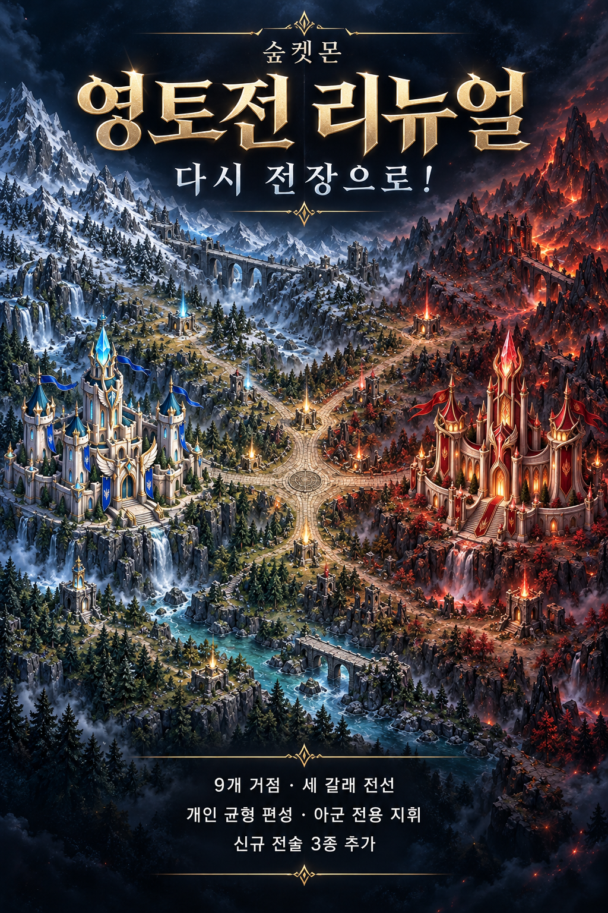

리버스콜 · TERRITORY WAR
리뉴얼 포스터 저장 ↗다시 전장으로 !
9개 거점, 세 갈래 전선. 공격·교란·재건으로 달라지는 전황.
스킬 이름을 눌러 연출을 재생합니다. 검수용 전장으로 운영 계정과 보상에는 영향을 주지 않습니다.

개인 균형 편성 · 아군 전용 지휘 · 신규 전술 3종
9개 거점, 세 갈래 전선. 공격·교란·재건으로 달라지는 전황.
스킬 이름을 눌러 연출을 재생합니다. 검수용 전장으로 운영 계정과 보상에는 영향을 주지 않습니다.

개인 균형 편성 · 아군 전용 지휘 · 신규 전술 3종